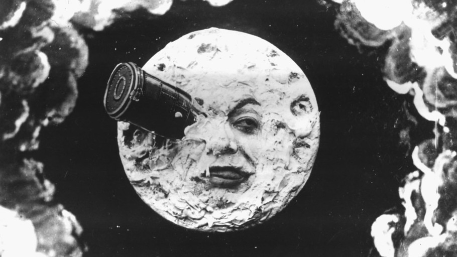
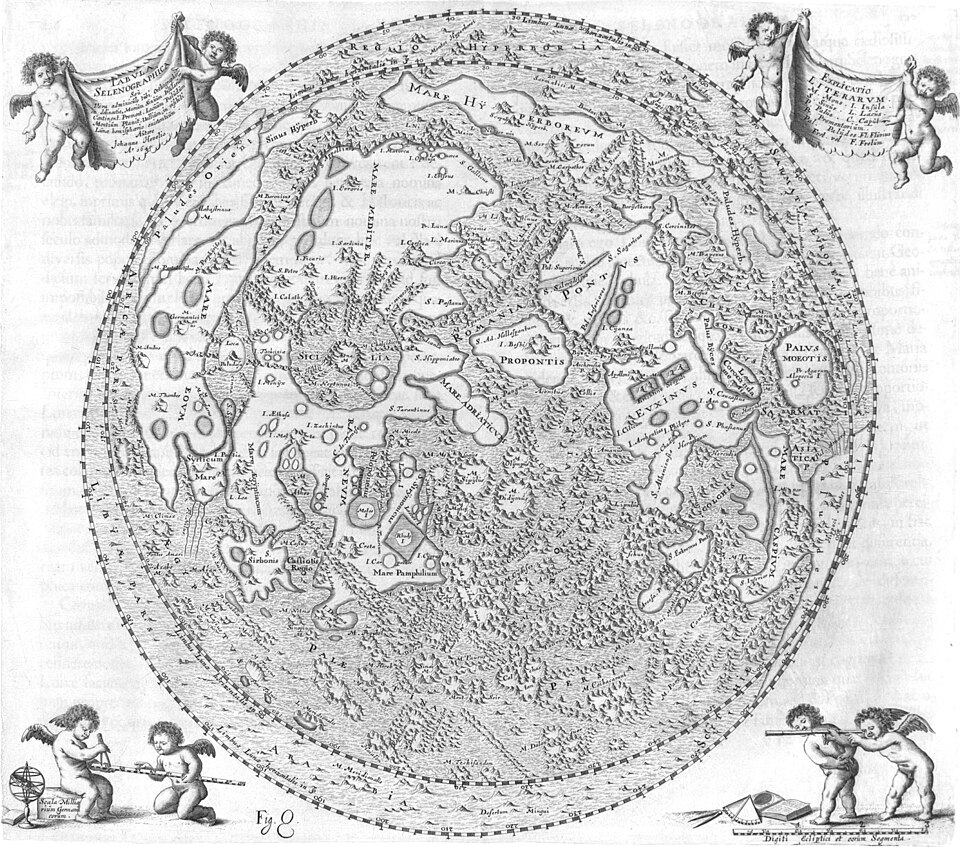
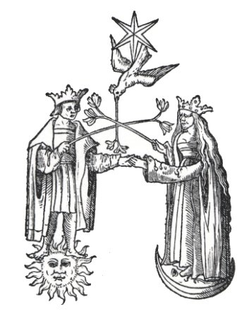
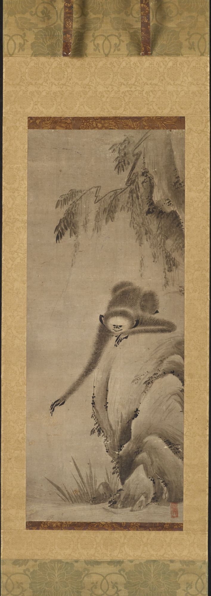
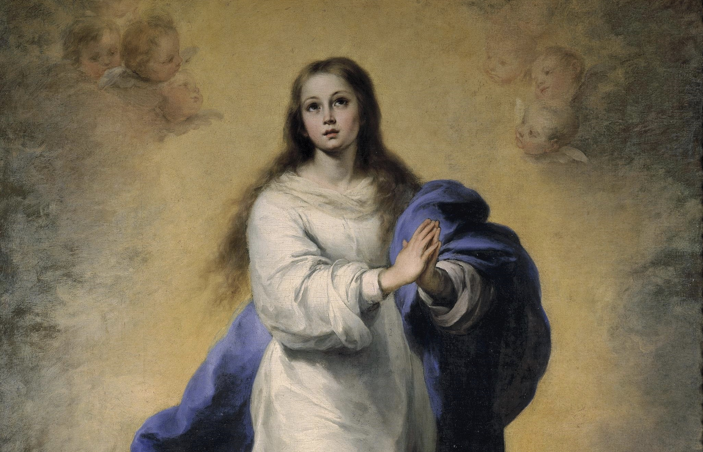
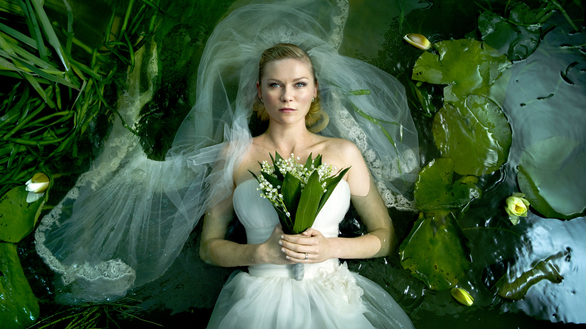

Volver a la Luna
El 6 de abril de 2026, la nave Orion se perdió durante unos minutos detrás de la cara oculta de la Luna. Sin contacto, sin imagen, sus tripulantes atravesaron el punto más distante de la Tierra que haya habitado un cuerpo humano.
Manuscritos iluminados, tratados alquímicos, grimorios, bestiarios y grabados herméticos. La tradición visual del conocimiento oculto.

El 6 de abril de 2026, la nave Orion se perdió durante unos minutos detrás de la cara oculta de la Luna. Sin contacto, sin imagen, sus tripulantes atravesaron el punto más distante de la Tierra que haya habitado un cuerpo humano.

Un proyectil se incrusta en el ojo derecho de la Luna. La Luna tiene rostro. La Luna reacciona. Méliès, Buñuel, Tarkovski: tres variaciones del mismo problema visual a lo largo de setenta años de cine.

A mediados del siglo XVII, Hevelius compuso una imagen de la Luna bajo una luz constante que ningún observador podría haber visto. Un retrato total de un mundo que sólo puede verse por partes.

Él está de pie sobre el sol. Ella, sobre la luna. Se miran de frente, todavía vestidos, y cada uno sostiene una rama florida que se cruza con la del otro. Se dan la mano izquierda.

La luna del haiku no está simplemente en el cielo. Tampoco "en" el agua. Está en la relación que el poema instituye entre ambos. Bashō no menciona el reflejo, pero lo vuelve inevitable.

Una figura vertical erguida sobre un creciente horizontal. Lo que persiste no es el significado, sino la forma. De los Beatos hispánicos a Murillo, de Murillo a Kiki Smith.

Un cuerpo celeste azul se aproxima a la Tierra con una lentitud que no admite corrección. La melancolía adquiere consistencia astronómica. No funciona como metáfora, sino como correlato.